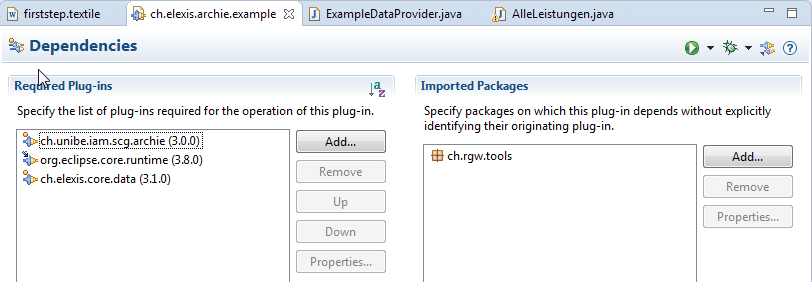
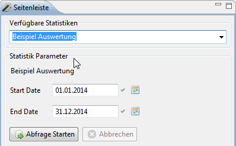
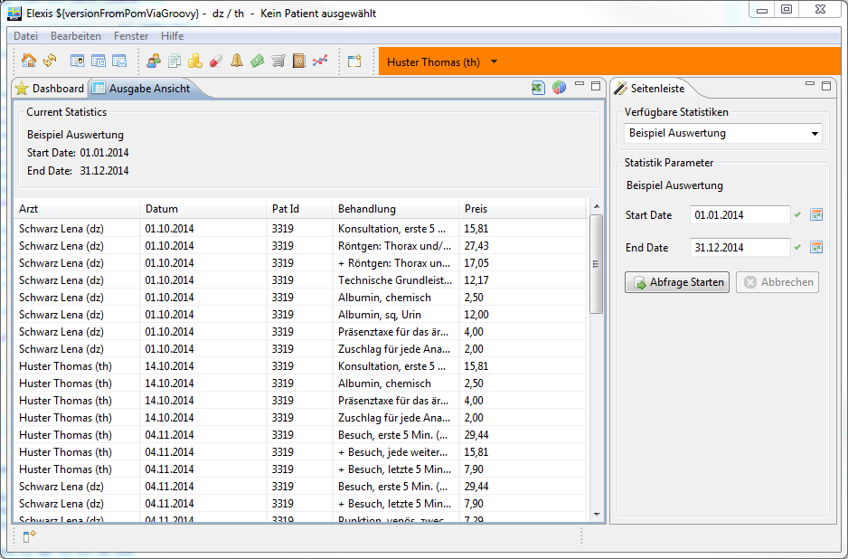

Bezeichnung: Erste Schritte
Author: Thomas Huster <huster@medevit.at>
Version: 3.0.0, 06.11.2014
Beschreibung: Beschreibung der ersten Schritte die nötig sind um ein neues Auswertungsplugin in Elexis zu erstellen
Für die Auswertungen in Elexis wurde 2009 ein Framework namens Archie entwickelt. Elexis basiert auf dem Eclipse RCP Framework welches wiederum auf OSGi und Java aufbaut.
In der Folge wird davon ausgegangen das der Elexis Sourcecode bereits in einer Eclipse IDE verfügbar ist.
Als erstes erstellen wir ein neues Plugin in welchem die Auswertungen implementiert werden.
Auf der ersten Wizard Seite wird der Plugin Name ch.elexis.archie.example konfiguriert. Für die restlichen Einstellungen kann der default Wert übernommen werden. Auf der 2ten Wizard Seite sollte Will make contributions to the UI aktiviert sein, und sowohl Generate an Activator, ... also auch Create Rich Client Platform Application deaktiviert werden. Die Generierung aus einem Template kann auf der 3ten Seite deaktiviert werden.
Für die folgenden Schritte ist es nötig in dem neuen Plugin zu spezifizieren welche Abhängigkeiten dieses auf die anderen Plugins und Packages hat.

Kurze Erklärung warum diese Abhängigkeiten bestehen.
ch.unibe.iam.scg.archie -> Die Definition des Extension Point für die Auswertung und der Klassen dafür.
ch.elexis.core.data -> Die Definition der Daten Klassen (Patient, Mandant, Fall, Konsultation, ...) von Elexis.
org.eclipse.core.runtime -> Die Definition von Eclipse Jobs, alle Auswertungen sind Jobs.
ch.rgw.tools -> Utilities (TimeTool, ...) und Definition die bei der Verwendung von Elexis Daten Klassen benötigt werden.
Das Konzept von Extensions Points ermöglicht es uns das Plugin ch.unibe.iam.scg.archie mit eigenen Auswertungen zu erweitern. Der dafür vorgesehene Extension Point hat die Id ch.unibe.iam.scg.archie.dataprovider. In diesem Extension Point können DataProvider Elemente angelegt werden (Kontextmenu > New > DataProvider).

Durch Klick auf den class* Link neben dem Namen der neuen Klasse in der die Auswertung implementiert wird kann die Klasse direkt angelegt werden.

Unsere Auswertung soll alle innerhalb eines Zeitraums verrechneten Leistungen anzeigen.
Jede Auswertung muss in der List
Für Auswertungen welche die Angabe eines Zeitraums benötigen wurde die Klasse ch.unibe.iam.scg.archie.model.AbstractTimeSeries erstellt. Alle abgeleiteten Klassen haben die dazu benötigten Eingabefelder, und können mittels this.getStartDate() und this.getEndDate() auf die Werte zugreifen.
TimeTool ttStart = new TimeTool(this.getStartDate().getTimeInMillis());
TimeTool ttEnd = new TimeTool(this.getEndDate().getTimeInMillis());
In Elexis wird die Query Klasse dazu verwendet Abfragen an die Datenbank zu stellen.
Queryqbe = new Query (Konsultation.class);
qbe.add(Konsultation.FLD_DATE, Query.GREATER_OR_EQUAL,
ttStart.toString(TimeTool.DATE_COMPACT));
qbe.add(Konsultation.FLD_DATE, Query.LESS_OR_EQUAL,
ttEnd.toString(TimeTool.DATE_COMPACT));
Listconsultations = qbe.execute();
Die Daten werden als eine Liste von Arrays von Comparable erstellt, und mittels der setContent der lokalen Variable dataSet zugewiesen.
// erstellen der Liste von Arrays
final ArrayList<Comparable<?>[]> result = new ArrayList<Comparable<?>[]>();
.
.
.
// erstellen eines Arrays für jede Zeile
Comparable<?>[] row = new Comparable<?>[this.dataSet.getHeadings().size()];
.
.
.
// übergabe der gesammelten Daten
this.dataSet.setContent(result);
Die komplette Implementierung für das ermitteln von Arzt, Datum, Pat Id, Behandlung und Preis aller verrechneten Leistungen in einem Zeitraum sieht dann wie folgt aus.
package ch.elexis.archie.example;import java.util.ArrayList;
import java.util.List;import org.eclipse.core.runtime.IProgressMonitor;
import org.eclipse.core.runtime.IStatus;
import org.eclipse.core.runtime.Status;import ch.elexis.data.AccountTransaction;
import ch.elexis.data.Konsultation;
import ch.elexis.data.Mandant;
import ch.elexis.data.Patient;
import ch.elexis.data.Query;
import ch.elexis.data.Verrechnet;
import ch.rgw.tools.TimeTool;
import ch.unibe.iam.scg.archie.model.AbstractTimeSeries;public class ExampleDataProvider extends AbstractTimeSeries {
public ExampleDataProvider(){
super(„Beispiel Auswertung”);
}@Override
public String getDescription(){
return „Beispiel Auswertung”;
}@Override
protected ListcreateHeadings(){
Listret = new ArrayList ();
ret.add(„Arzt”);
ret.add(„Datum”);
ret.add(„Pat Id”);
ret.add(„Behandlung”);
ret.add(„Preis”);
return ret;
}@Override
protected IStatus createContent(IProgressMonitor monitor){
monitor.beginTask(„Beispiel Auswertung”, IProgressMonitor.UNKNOWN);
Queryqbe = new Query (Konsultation.class);
TimeTool ttStart = new TimeTool(this.getStartDate().getTimeInMillis());
TimeTool ttEnd = new TimeTool(this.getEndDate().getTimeInMillis());
qbe.add(Konsultation.FLD_DATE, Query.GREATER_OR_EQUAL,
ttStart.toString(TimeTool.DATE_COMPACT));
qbe.add(Konsultation.FLD_DATE, Query.LESS_OR_EQUAL,
ttEnd.toString(TimeTool.DATE_COMPACT));
monitor.subTask(„Lade Konsultationen”);
Listconsultations = qbe.execute(); final ArrayList<Comparable<?>[]> result = new ArrayList<Comparable<?>[]>();
for (Konsultation cons : consultations) {
if (cons.getFall() != null) {
Patient patient = cons.getFall().getPatient();
Mandant mandant = cons.getMandant();
Listactivities = cons.getLeistungen();
if (mandant != null && patient != null && activities != null
&& !activities.isEmpty()) {
for (Verrechnet verrechnet : activities) {
Comparable<?>[] row = new Comparable<?>[this.dataSet.getHeadings().size()];
int index = 0;row[index++] = mandant.getMandantLabel();
row[index++] = cons.getDatum();
row[index++] = patient.get(Patient.FLD_PATID);
row[index++] = verrechnet.getText();
row[index++] = verrechnet.getNettoPreis().toString();result.add(row);
if (monitor.isCanceled()) {
return Status.CANCEL_STATUS;
}
}
}
}
}
// Set content.
this.dataSet.setContent(result);// Job finished successfully
monitor.done();return Status.OK_STATUS;
}
}
Für das Starten von Applikationen aus Eclipse wird eine Run Configuration benötigt. Damit das neue Plugin ausgeführt wird, muss dieses in diese mit aufgenommen werden. Da das Plugin in keinem Feature enthalten ist, muss die Konfiguration auf Plugins basieren (Launch with: Plugins selected below only). Durch ausführen von Add Required Plug-ins werden automatisch zusätzlich benötigte Plugins in die Konfiguration aufgenommen.

Wenn das Plugin mit gestartet wird ist die Beispiel Auswertung in der Seitenleiste View der Archie Perspektive auswählbar.

Die Auswertung kann mittels Abfrage Starten, nach der Auswahl eines sinnvollen Zeitbereichs, gestartet werden. Je nach Datensatz und Zeitbereich dauert das Zusammenstellen der Datenzeilen, bevor die Tabelle mit den Ergebnissen angezeigt wird.
